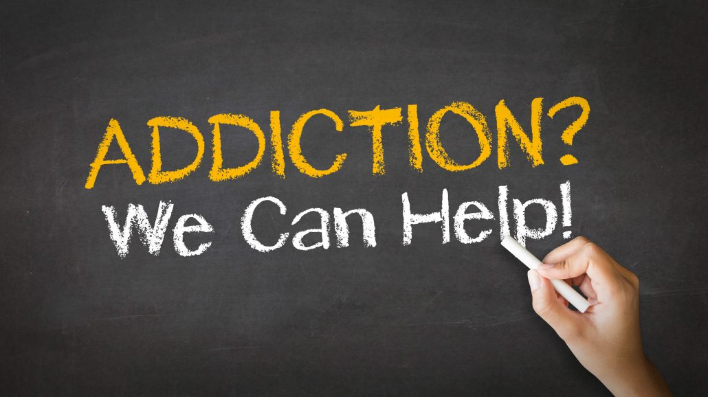
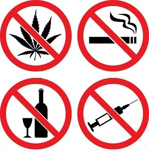

De-Addiction
Drug treatment is intended to help addicted individuals stop compulsive
drug seeking and use. Treatment can occur in a variety of settings, take
many different forms, and last for different lengths of time. Because
drug addiction is typically a chronic disorder characterized by
occasional relapses, a short-term, one-time treatment is usually not
sufficient. For many, treatment is a long-term process that involves
multiple interventions and regular monitoring.


© 2019 We Hospital. All rights are reserved